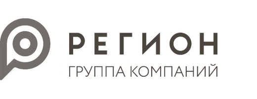
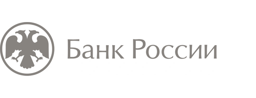

Банки и другие профессиональные участники финансового рынка
являющиеся участниками судебного или досудебного разбирательства.
Независимая экспертная практика
Исследую банковские и финансовые операции. Помогаю разобраться в обстоятельствах дела и сформулировать обоснованную экспертную позицию.
Какой вопрос нужно решить?
Подготовка судебного или досудебного экспертного заключения по банковским и финансовым вопросам.
Подробнее об услугеПроверка заключения другого эксперта: методика, расчёты, аргументация и обоснованность выводов.
Подробнее об услугеПояснение заключения, ответы на вопросы суда и сторон, работа с финансовой составляющей дела.
Подробнее об услугеРазъяснение банковских и финансовых вопросов и определение подходящего формата экспертной помощи.
Подробнее об услугеявляющиеся участниками судебного или досудебного разбирательства.
вовлечённые в спор, проверку или судебное разбирательство.
чьи интересы связаны с банковскими и финансовыми операциями.
для усиления позиции своих клиентов на стадии следствия или в судебном процессе.
получившие заказ от своих клиентов на профильное экспертное заключение или рецензию.
следствие, прокуратура, суды, Банк России, АСВ.
Профессиональный опыт — основа понимания реальных банковских и финансовых процессов

Заместитель генерального директора
Казначейство, ДИБУ, заместитель директора департамента
Главный эксперт по оценке финансовых активов

Департамент лицензирования
Генеральный директор
Старший дилер
Каждое исследование опирается на профессиональный опыт, проверенную методику и внимательное отношение к деталям дела. Выводы формулируются в пределах компетенции и материалов — без предположений и обещаний исхода дела.
Работа с материалами ведётся конфиденциально на всех этапах. Передача документов согласуется отдельно и по безопасному каналу. Чувствительные сведения не публикуются и не передаются третьим лицам без согласования.